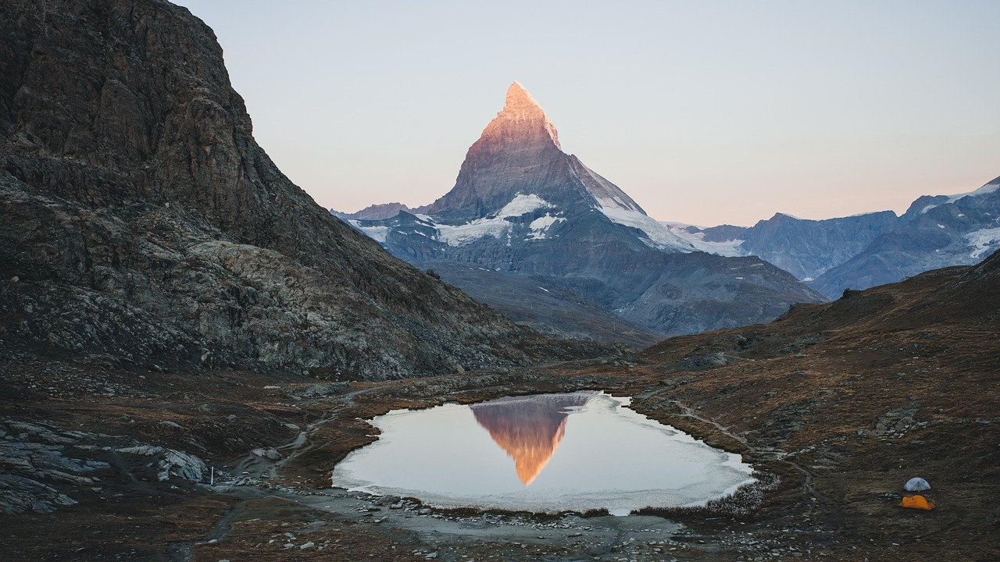
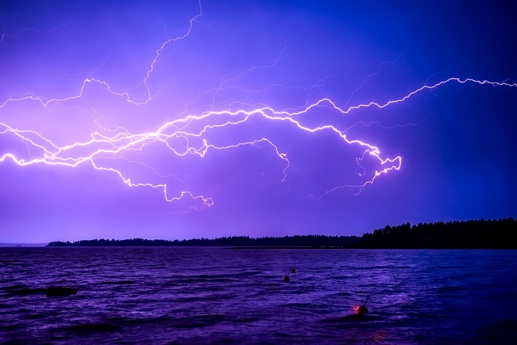
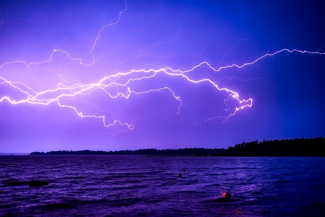
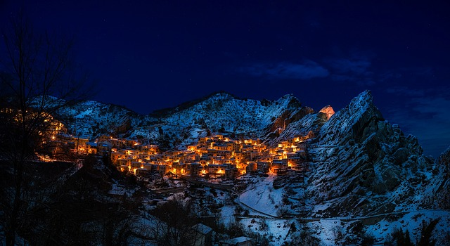
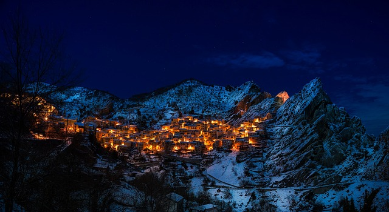
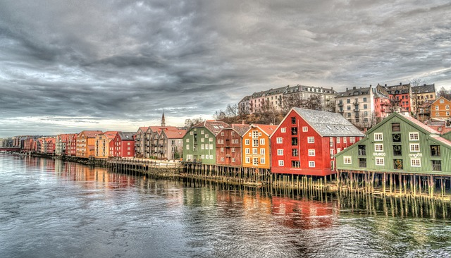
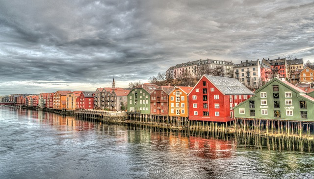

The most beautiful countries in Europe
The only ones.
Austria


Österreich ist ein Binnenland in Mitteleuropa und hat eine faszinierende Geschichte, beeindruckende Landschaften und eine reiche kulturelle Tradition. Hier sind einige interessante Informationen über Österreich:
Geografie: Österreich grenzt im Norden an Deutschland und die Tschechische Republik, im Osten an die Slowakei und Ungarn, im Süden an Slowenien und Italien sowie im Westen an die Schweiz und Liechtenstein. Es liegt im Herzen der Alpen und ist bekannt für seine malerischen Berge, grünen Täler, klaren Seen und Flüsse.
Geschichte: Österreich hat eine lange Geschichte, die bis in die Römerzeit zurückreicht. Es war einst das Zentrum des mächtigen Habsburgerreichs, das im 16. Jahrhundert zu einem der einflussreichsten Länder Europas wurde. Nach dem Ersten Weltkrieg wurde das Habsburgerreich aufgelöst, und Österreich wurde 1918 eine unabhängige Republik.
Kultur: Die österreichische Kultur hat viele berühmte Persönlichkeiten hervorgebracht, darunter Musiker wie Wolfgang Amadeus Mozart, Ludwig van Beethoven und Franz Schubert. Die Hauptstadt Wien ist für ihre herausragende Musikszene, darunter die Wiener Philharmoniker und die Wiener Staatsoper, bekannt. Österreich ist auch für seine traditionelle Musik und Tänze wie den Walzer und den Ländler berühmt.
Sprache: Die offizielle Sprache Österreichs ist Deutsch, und die meisten Einwohner sprechen auch Englisch als zweite Sprache.
Essen und Trinken: Die österreichische Küche ist bekannt für ihre herzhaften und schmackhaften Gerichte. Wiener Schnitzel, Apfelstrudel, Sachertorte und Kaiserschmarrn sind einige der kulinarischen Highlights. Österreich ist auch für seine Kaffeehauskultur berühmt, in der die Menschen gemütlich zusammenkommen, um Kaffee zu trinken und Kuchen zu essen.
Wirtschaft: Österreich hat eine gut entwickelte und exportorientierte Wirtschaft. Es ist bekannt für seine hochwertigen Produkte, insbesondere in den Bereichen Maschinenbau, Technologie, Automobilindustrie und Tourismus. Der Tourismus spielt eine wichtige Rolle in der Wirtschaft des Landes, da Österreich jedes Jahr Millionen von Besuchern anzieht, die die Schönheit der Alpenlandschaft genießen wollen.
Politik: Österreich ist eine parlamentarische Demokratie mit einem Bundespräsidenten als Staatsoberhaupt und einem Bundeskanzler als Regierungschef. Das Land ist in neun Bundesländer unterteilt, von denen Wien die Hauptstadt und zugleich das kleinste Bundesland ist.
Sehenswürdigkeiten: Neben der kulturellen Vielfalt bietet Österreich eine Vielzahl von Sehenswürdigkeiten und touristischen Attraktionen. Schloss Schönbrunn und der Stephansdom in Wien, die Festung Hohensalzburg in Salzburg, die Stadtzentren von Graz und Innsbruck sowie die idyllische Landschaft der Wachau sind nur einige der Highlights, die Besucher anziehen.
Österreich ist ein Land mit einer faszinierenden Mischung aus Geschichte, Natur und Kultur, das jedes Jahr Millionen von Besuchern aus der ganzen Welt anzieht.
Switzerland

Die Schweiz ist ein atemberaubendes Land in Mitteleuropa, das für seine atemberaubende Berglandschaft, seine politische Neutralität und seine wirtschaftliche Stabilität bekannt ist. Hier sind einige interessante Informationen über die Schweiz:
Geografie: Die Schweiz liegt im Herzen Europas und grenzt an Deutschland im Norden, Frankreich im Westen, Italien im Süden und Österreich und Liechtenstein im Osten. Sie ist bekannt für ihre spektakuläre Berglandschaft, darunter die Alpen im Süden und das Jura-Gebirge im Nordwesten. Mehr als die Hälfte des Landes besteht aus Bergen und Hügeln.
Geschichte: Die Geschichte der Schweiz ist geprägt von ihrer langen Tradition der politischen Neutralität. Die Eidgenossenschaft wurde im 13. Jahrhundert gegründet und bestand aus einer Vereinigung von kantonalen Gebieten. Die Schweiz war im Laufe der Jahrhunderte in zahlreiche Kriege und Konflikte in Europa verwickelt, blieb jedoch seit über 200 Jahren militärisch neutral.
Politik: Die Schweiz ist eine föderale Republik, bestehend aus 26 Kantonen und hat ihre politische Neutralität beibehalten, indem sie sich aus internationalen Konflikten heraushält. Die Regierung wird von einem Bundesrat geleitet, dessen Mitglieder aus verschiedenen politischen Parteien kommen. Eine wichtige Besonderheit ist das direkte Demokratie-System, bei dem die Bürgerinnen und Bürger aktiv an der Gesetzgebung beteiligt sind, indem sie über Volksinitiativen und Referenden abstimmen können.
Kultur: Die Schweizer Kultur ist vielfältig und spiegelt die unterschiedlichen kulturellen Einflüsse der Nachbarländer wider. Es gibt vier offizielle Sprachen in der Schweiz: Deutsch, Französisch, Italienisch und Rätoromanisch. Jede Region hat ihre eigenen Traditionen und Bräuche, die sich in der Kunst, Musik, Küche und Architektur widerspiegeln.
Wirtschaft: Die Schweiz hat eine der stabilsten und reichsten Volkswirtschaften der Welt. Sie ist bekannt für ihre Banken- und Finanzdienstleistungsindustrie, Uhrenherstellung, Pharmazeutika, Lebensmittelproduktion und Maschinenbau. Die Schweizer Franken ist eine der am häufigsten als sichere Anlage geltenden Währungen.
Tourismus: Die Schweiz ist ein Paradies für Naturliebhaber und Touristen. Sie zieht jedes Jahr Millionen von Besuchern an, die die malerischen Alpenlandschaften, die idyllischen Seen, die charmanten Städte wie Zürich, Genf und Bern sowie die erstklassigen Skigebiete genießen wollen.
Uhrenindustrie: Die Schweiz ist weltweit bekannt für ihre hochwertige Uhrmacherkunst. Die Schweizer Uhrenindustrie ist für ihre Präzision und Handwerkskunst berühmt und beherbergt einige der renommiertesten Uhrenmarken der Welt.
Schokolade: Die Schweiz ist auch berühmt für ihre Schokoladenproduktion. Schweizer Schokolade ist weltweit bekannt für ihre Qualität und ihren Geschmack und wird von vielen berühmten Marken wie Lindt, Toblerone und Nestlé hergestellt.
Die Schweiz ist ein bemerkenswertes Land mit einer reichen Kultur, einer beeindruckenden Natur und einer stabilen Wirtschaft, das eine Fülle von Erfahrungen für Besucher und Bewohner gleichermaßen bietet.
Finnland
 

Finnland ist ein faszinierendes Land im Norden Europas, das für seine beeindruckende Natur, fortschrittliche Bildungssysteme und einzigartige Kultur bekannt ist. Hier sind einige interessante Informationen über Finnland:
Geografie: Finnland liegt in Nordeuropa und grenzt an Schweden im Westen, Norwegen im Norden und Russland im Osten. Im Süden wird das Land durch die Ostsee begrenzt. Finnland ist eines der nordischen Länder und hat eine vielfältige Landschaft mit tausenden von Seen, Wäldern und Mooren. Es ist auch berühmt für seine Mitternachtssonne im Sommer und die Polarlichter im Winter.
Bildungssystem: Finnland hat ein renommiertes Bildungssystem, das international als eines der besten der Welt anerkannt ist. Es setzt stark auf Gleichheit und Chancengleichheit für Schülerinnen und Schüler. Die finnische Bildung betont die kreative Entwicklung der Schüler, die Eigenverantwortung und das kritisches Denken.
Sprache: Finnisch ist die Amtssprache Finnlands und wird von der Mehrheit der Bevölkerung gesprochen. Schwedisch ist ebenfalls eine anerkannte Minderheitensprache und wird in einigen Regionen des Landes verwendet.
Sauna-Kultur: Die Sauna ist ein fester Bestandteil der finnischen Kultur und Geschichte. Es wird geschätzt, dass es in Finnland mehr Saunen als Einwohner gibt. Die Tradition der Sauna ist tief verwurzelt und hat für die Finnen eine wichtige soziale und kulturelle Bedeutung.
Design und Architektur: Finnland ist bekannt für sein herausragendes Design und seine moderne Architektur. Zahlreiche finnische Designer und Architekten haben weltweit Anerkennung gefunden. Marken wie Marimekko und Iittala sind international für ihre innovativen Designs bekannt.
Wirtschaft: Finnland hat eine entwickelte und hochtechnologische Wirtschaft. Es ist bekannt für seine Erfolge in den Bereichen Telekommunikation, Elektronik, Forstwirtschaft und Metallindustrie. Große finnische Unternehmen wie Nokia und Kone haben weltweite Bekanntheit erlangt.
Nordlichter: Die nördlichen Teile Finnlands bieten hervorragende Möglichkeiten, die faszinierenden Nordlichter, auch Aurora Borealis genannt, zu beobachten. In den Wintermonaten, wenn die Nächte am längsten sind, haben Besucher die Chance, dieses atemberaubende Naturphänomen zu erleben.
Feste und Traditionen: Finnland hat viele traditionelle Feste und Feiern, die das ganze Jahr über stattfinden. Das Juhannus-Midsummer-Fest im Juni ist eines der wichtigsten Feiertage, bei dem die Finnen die längsten Tage des Jahres feiern. Weihnachten ist ebenfalls ein bedeutendes Fest mit festlichen Traditionen und einem Besuch des Weihnachtsmanns in Rovaniemi, der offiziellen Heimatstadt des Weihnachtsmanns.
Finnland ist ein Land mit einer einzigartigen Kultur, beeindruckender Natur und einer reichen Geschichte. Es ist ein beliebtes Reiseziel für Naturliebhaber, Abenteurer und diejenigen, die die nordische Kultur und Traditionen erleben möchten.
Italy
 

Italien ist ein wunderschönes Land im südlichen Europa, das für seine reiche Geschichte, beeindruckende Kunst, köstliche Küche und leidenschaftliche Kultur bekannt ist. Hier sind einige interessante Informationen über Italien:
Geografie: Italien liegt auf der Apenninhalbinsel und grenzt im Norden an Frankreich, die Schweiz, Österreich und Slowenien. Es wird von der Adria im Osten und dem Tyrrhenischen Meer im Westen umgeben. Die landschaftliche Vielfalt Italiens ist beeindruckend und umfasst die majestätischen Alpen im Norden, sanfte Hügel im Zentrum und sonnenverwöhnte Küsten im Süden.
Geschichte: Italien hat eine der reichsten und faszinierendsten Geschichten in der westlichen Welt. Das antike Rom war einst das Zentrum eines der mächtigsten Reiche der Geschichte und hat einen enormen Einfluss auf die moderne Zivilisation gehabt. Italien war auch das Zentrum der Renaissance, einer kulturellen Bewegung, die Künstler, Schriftsteller und Wissenschaftler wie Leonardo da Vinci, Michelangelo, Dante Alighieri und Galileo Galilei hervorbrachte.
Kunst und Architektur: Italien ist ein Schatz an Kunstwerken und architektonischen Meisterwerken. Von den antiken Ruinen Roms über die gotischen Kathedralen bis hin zu den Renaissance-Kunstwerken und barocken Prachtbauten gibt es in Italien eine Fülle von kulturellem Erbe. Städte wie Rom, Florenz und Venedig sind wahre Kunstschätze.
Essen und Wein: Die italienische Küche ist weltweit beliebt und bekannt für ihre Vielfalt und Frische. Von Pizza und Pasta bis hin zu Gelato und Espresso bieten italienische Gerichte eine unvergleichliche Gaumenfreude. Jede Region hat ihre eigenen Spezialitäten, die auf lokalen Zutaten und Traditionen basieren. Italien ist auch berühmt für seine qualitativ hochwertigen Weine, darunter Chianti, Barolo, Amarone und Prosecco.
Mode: Italien ist ein führendes Zentrum für Mode und Design. Die italienische Modeindustrie ist international bekannt für ihre Eleganz, Stil und Qualität. Städte wie Mailand sind bekannt für ihre Modewochen und beherbergen einige der renommiertesten Modedesigner der Welt.
Romantische Reiseziele: Italien ist ein beliebtes Reiseziel für Paare und Romantiker. Städte wie Venedig mit ihren Kanälen, Florenz mit ihrer reichen Kunstgeschichte und die Amalfiküste mit ihrer atemberaubenden Küste ziehen jährlich Tausende von Verliebten an.
Sprache: Italienisch ist die Amtssprache Italiens und wird von der überwiegenden Mehrheit der Bevölkerung gesprochen. Italienisch hat auch einen großen Einfluss auf andere Sprachen, insbesondere im Bereich der Musik und der Kunst.
Vatikanstadt: Obwohl Vatikanstadt ein unabhängiges Land ist, liegt es innerhalb der Stadt Rom. Es ist der kleinste unabhängige Staat der Welt und der Sitz des Papstes, des Oberhaupts der katholischen Kirche.
Italien ist ein Land mit einer reichen kulturellen Geschichte, atemberaubenden Landschaften, kulinarischen Köstlichkeiten und einer lebendigen Lebensart. Es zieht Reisende aus der ganzen Welt an, die die Schönheit und den Charme dieses einzigartigen Landes erleben möchten.
Norway
 

Norwegen ist ein atemberaubendes Land in Nordeuropa, das für seine spektakulären Fjorde, atemberaubenden Landschaften, fortschrittliche Gesellschaft und nordische Kultur bekannt ist. Hier sind einige interessante Informationen über Norwegen:
Geografie: Norwegen erstreckt sich von der Nordsee im Westen bis zur Barentssee im Nordosten. Es teilt sich die längste Grenze zu Schweden im Osten und hat auch eine Landgrenze zu Finnland im Norden. Die norwegische Küste ist durch ihre charakteristischen Fjorde, steilen Klippen und unberührten Strände geprägt.
Naturwunder: Norwegen ist für seine atemberaubende Natur bekannt. Die majestätischen Fjorde, wie der Geirangerfjord und der Nærøyfjord, gehören zum UNESCO-Weltnaturerbe und sind beliebte Reiseziele für Naturliebhaber. Das Land ist auch reich an Bergen und Gletschern, darunter der berühmte Preikestolen (Felskanzel) und der Jostedalsbreen-Gletscher.
Nordlichter: Die nördlichen Regionen Norwegens bieten eine hervorragende Möglichkeit, die faszinierenden Nordlichter (Aurora Borealis) zu sehen. Besonders in den Wintermonaten, wenn die Nächte am längsten sind, haben Besucher die Chance, dieses atemberaubende Naturphänomen zu erleben.
Kultur: Norwegen hat eine reiche nordische Kultur und Traditionen, die tief in der Geschichte des Landes verwurzelt sind. Die Norweger sind stolz auf ihre Folklore, ihre Volksmusik und ihre traditionelle Tracht, die Bunad genannt wird. Die Sami, die indigene Bevölkerung Norwegens, haben ihre eigene einzigartige Kultur und Sprache.
Städte: Die Hauptstadt Norwegens ist Oslo, eine lebendige Stadt mit einer reichen Kultur- und Kunstszene. Bergen, die zweitgrößte Stadt des Landes, ist berühmt für ihre charmante Altstadt und liegt in der Nähe der spektakulären Fjorde. Trondheim, Stavanger und Tromsø sind weitere bedeutende Städte Norwegens.
Ölindustrie: Norwegen hat eine der größten Erdölvorkommen in Europa und ist ein wichtiger Akteur in der Öl- und Gasindustrie. Die Einnahmen aus dem Ölexport haben dazu beigetragen, Norwegen zu einem wohlhabenden Land mit einem hohen Lebensstandard zu machen.
Wohlfahrtssystem: Norwegen ist bekannt für sein fortschrittliches Sozial- und Wohlfahrtssystem. Es legt großen Wert auf soziale Gerechtigkeit, Bildung, Gesundheitsversorgung und Gleichheit der Geschlechter. Norwegen hat regelmäßig hohe Platzierungen in globalen Rankings zur Lebensqualität und Zufriedenheit.
Aktivitäten im Freien: Norwegen ist ein Paradies für Outdoor-Aktivitäten. Es bietet erstklassige Möglichkeiten zum Wandern, Skifahren, Angeln, Kajakfahren und vielem mehr. Die einzigartige Landschaft macht Norwegen zu einem der besten Orte, um die Natur in ihrer ganzen Pracht zu erleben.
Norwegen ist ein Land von atemberaubender Schönheit, mit einer starken Bindung zur Natur und einer modernen, fortschrittlichen Gesellschaft. Es ist ein beliebtes Reiseziel für Abenteurer, Naturliebhaber und Kulturinteressierte gleichermaßen.